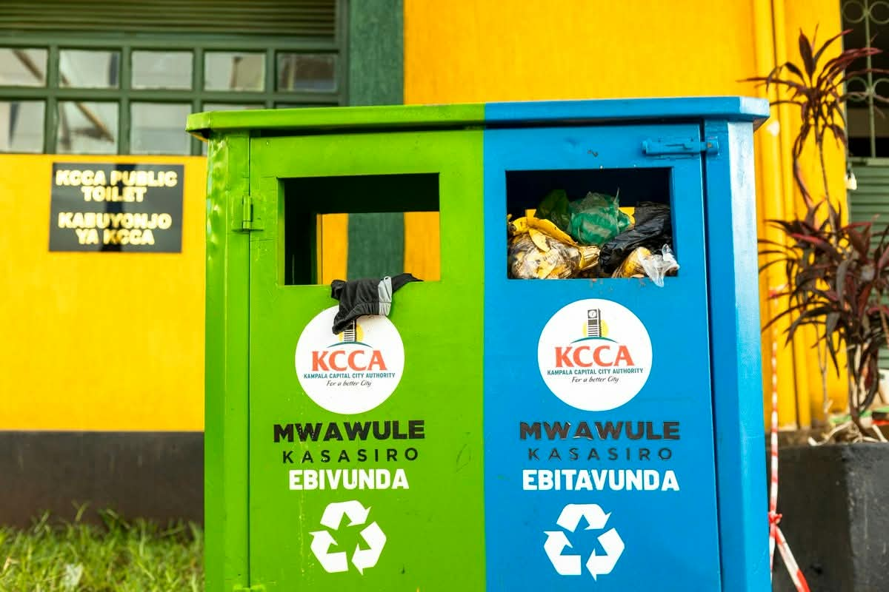
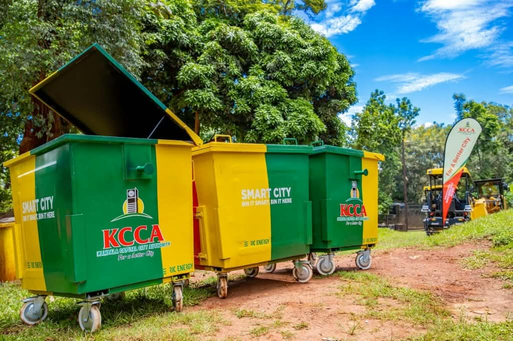
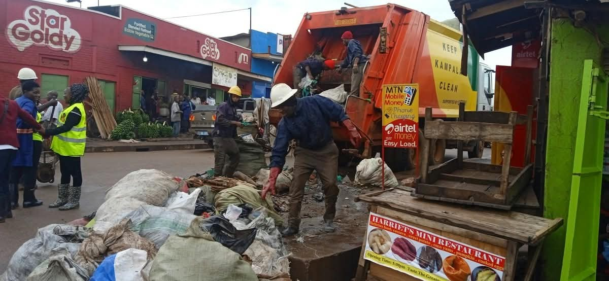
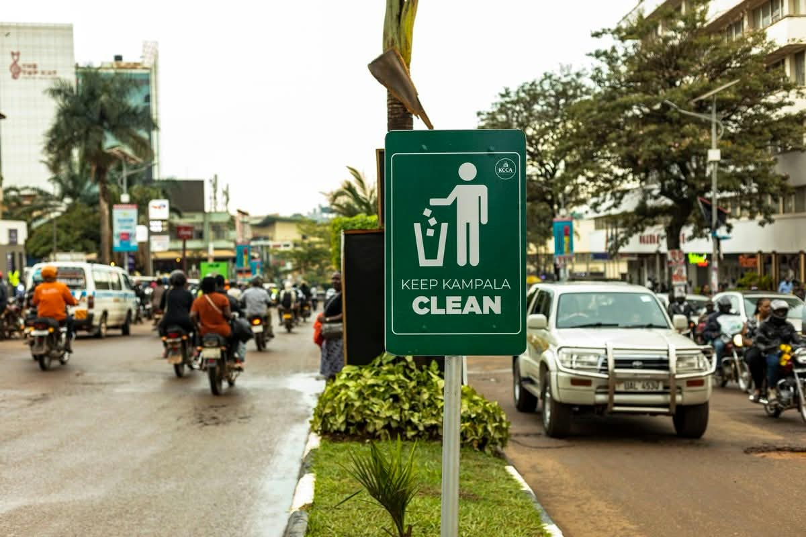

1. Seperate waste
Seperate organic waste like food remains and peels from
inorganic waste like plastics, glass, cans, paper.

2. Store Waste safely
Use covered dustbins to store waste.
This helps prevent bad smells and keeps the environment clean.

3. Dispose Properly
Take waste to designated collection points
Follow the scheduled pickup days.

Important Warning
Do not burn rubbish or throw waste into drainage channels.
Always dispose of waste responsibly.